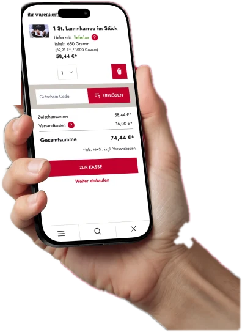

A
Editorial: ein Case, eine Bühne
Eine Zeile pro Projekt, abwechselnd links und rechts. Das Motiv ist riesig, die Aussage groß wie eine Headline, Details als kurze Liste. Wirkt wie ein Magazin, braucht viel Scrollweg.
Outdoor · Tout Terrain
So robust wie die Räder, die er verkauft.
- Kunde
- Radmanufaktur für Bike-Traveller
- Leistung
- Shop, Marke, Content

Food · Beisser
Feinste Fleischwaren, mit dem Daumen bestellt.
- Kunde
- Das Fleisch ist willig
- Leistung
- Mobile Shop, Checkout

Food · Wein-Bauer.de
50 Jahre Weinhandel, auf allen Kanälen.
- Kunde
- Multi-Channel Weinhandel
- Leistung
- Shopware, Marketing